1 Diagrammi
1.1 Diagramma casi uso
Diagramma che esprime un comportamento desiderato o offerto Sono modellati i requisiti funzionali
- attore
- chi ha a che fare con il sistema e' il ruolo assunto da chi interagisce con il sistema
- caso uso
- cosa attore puo' fare specifica sequenza di azioni incluse quelle alternative che un sistema puo' eseguire interagendo con attori esterni.
- associazioni
- collega attori a casi d'uso
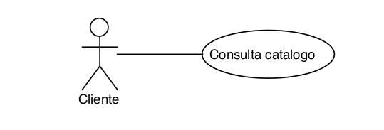
1.1.1 Elementi del diagramma
- Include
- Dipendenza tra casi d'uso, il caso incluso fa parte di quello che lo include.
non e' opzionale ma necessaria/obbligatoria
freccia verso il caso incluso - linea tratteggiata
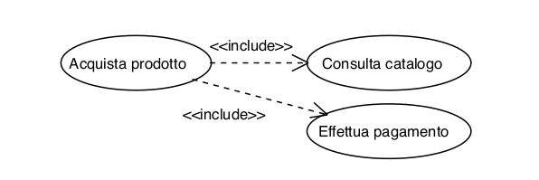
- Extend
- Dipendenza opzionale che gestisce casi particolari non standard
freccia verso caso che include - linea tratteggiata
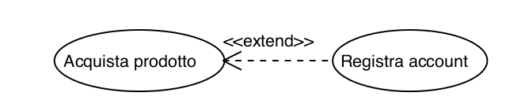
- Generalizzazione
- collega attore o caso d'uso a uno piu generale
freccia verso caso generale - freccia azzurra piena
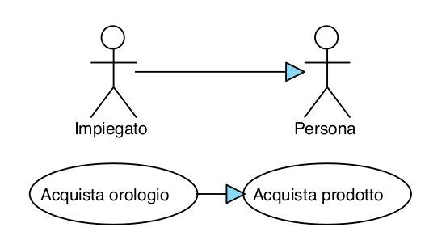
1.1.2 Esempio
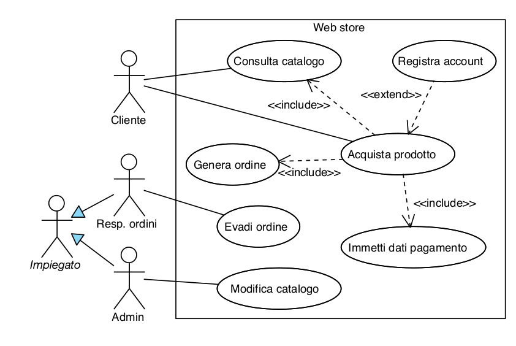
1.2 Diagrammi attivita'
Diagramma che modella un comportamento(fra piu entita') come un insieme di azioni organizzate secondo un flusso. Il flusso e' definito' da enitita' (token) che viaggiano lungo il diagramma.
- nodo oggetto
- rettangoli , specificano input-output di azioni
- nodi azione
- specificano unita' di comportamento (es : suonare canzone)
Un nodo azione e' eseguito quando sono presenti token su tutti gli archi di
entrata e quando sono soddisfatte tutte le precondizioni.
Al termine sono generati i control token
rettandolo smussato
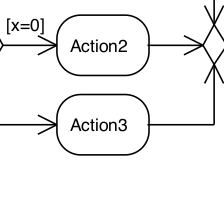
- nodi controllo
- specificano il flusso di attivita'
- nodi decisione
- un input - vari output mutualmente esclusivi -
condizioni sugli archi (rombo)
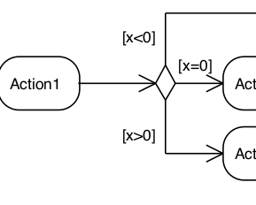
- nodi fusione
- vari input e un solo output
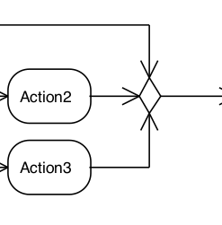
- nodi fork
- hanno un ingresso e varie uscite - i toke in ingresso sono duplicati su ogni uscita.
- nodi join
- hanno vari ingressi e una sola uscita - quando ci sono i token su tutti gli
ingressi e' prodotto il singolo token di uscita.
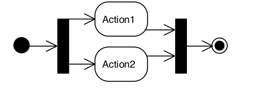
- nodo fine inizio
- disco nero marca inizio - disco nero bordato denota la fine
1.2.1 Esempio
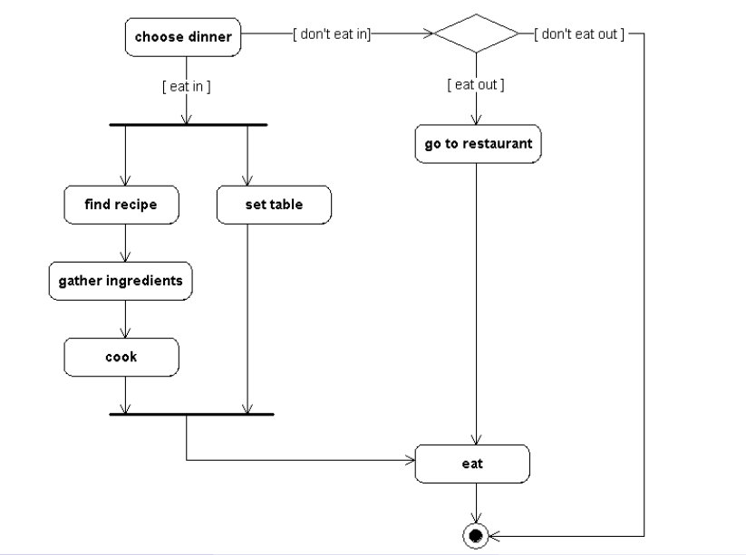
1.3 Diagrammi stato
Descrive la sequenza di stati in cui si trova un oggetto durante il suo ciclo di vita e in risposta a eventi.
- Stato : codizione o situazione nella vita di un oggetto in cui soddisfa condizione,
esegue attivita' o aspetta un evento.
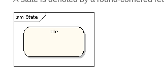
- Evento : la specifica di un occorrenza che ha una collocazione nel tempo e nello spazio.
- e' il passaggio da uno stato a un altro in risposta ad un evento.
Ogni transizione ha:
Origine : stato origine
Destinazione : Stato destinazione
Evento: trigger che attiva il passaggio di stato
Guard : condizione che se vera permette passaggio di stato
Action : azione che risulta dal dal cambio di stato
Sitassi -> event[guard] / action
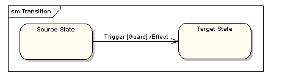
- una tx puo' anche non portare ad un cambio di stato
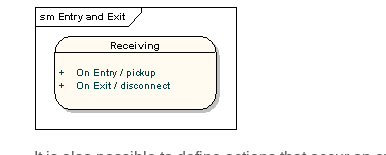
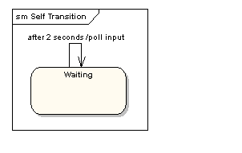
- permettono di suddividere la complessita' del modello. Vi sara' un
macrostato al cui interno vi sono altri stati.
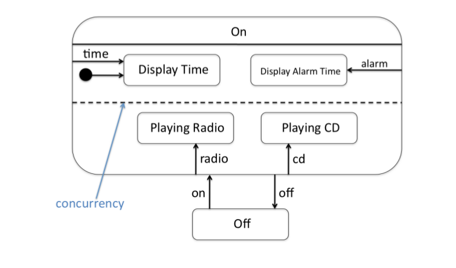
- nodi fork
- hanno un ingresso e varie uscite - i toke in ingresso sono duplicati su ogni uscita.
- nodi join
- hanno vari ingressi e una sola uscita - quando ci sono i token su tutti gli ingressi e' prodotto il singolo token di uscita.
- nodo fine inizio
- disco nero marca inizio - disco nero bordato denota la fine
1.3.1 Esempio
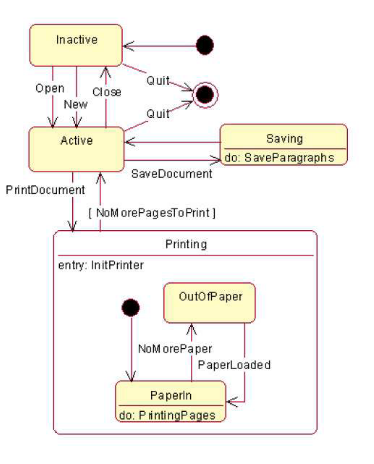
1.4 Diagramma sequenza
Sono diagrammi che mostrano gli oggetti come lifelines che scorrono verso il basso nel tempo Le interazioni fra oggetti sono disegnate come freccie dalla lifeline source a quella dest. Sono utili per mostrare la comunicazione fra oggetti
- Lifelines
- queste linee verticali trovano al loro apice un rettangolo contenente il nome
dell'oggetto
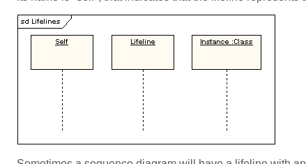
- Messaggi
- Sono mostrati e disegnati come frecce. Possono essere completi, lost o found.
Possono anche essere sincroni (freccia piena)
asincroni (freccia vuota)
messaggio ritorno asincroni (linea tratteggiata frecia vuota)
I messaggi lost e found convergono in un disco nero
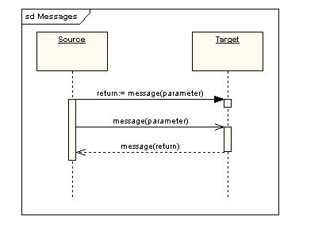
- Occorrenze di esecuzione
- Sono sottili rettangoli posti sulla linea verticale. Intervallo in cui l’oggetto è attivo nell’interazione (ovvero un suo metodo è in esecuzione)
- Auto-messaggi
- possono riferisti a ricorsioni o chiamate di un metodo in self.
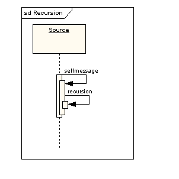
1.5 Diagrammi di classe
Mostra i blocchi di costruzione di un qualsiasi sistema basato sul paradigma di programmazione o.o.
- Classe
- Rappresentano attributi e metodi che un oggetto istanza e' in gradi di rappresentare.
Sono rappresentati da blocchi rettangolari in cui vi e' il Nome, gli Attributi e i
metodi.
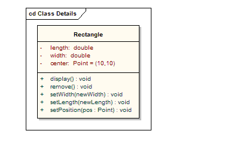
- Interaccia
- puo' essere vista come un contratto da rispettare, sono definiti metodi da
fornire nella reale interpretazione della classe.
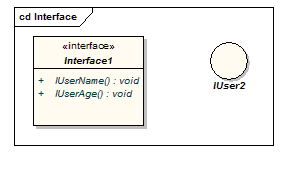
- Associazioni
- determinano una relazione fra due oggetti/classi. Solitamente tale relazione
e' implementata utilizzando un istanza di oggetto come variabile di classe.
E' disegnata come una linea ai cui apici puo' essere esplicata la cardinalita'.
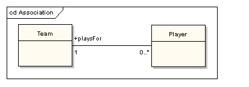
1.6 CRC schede
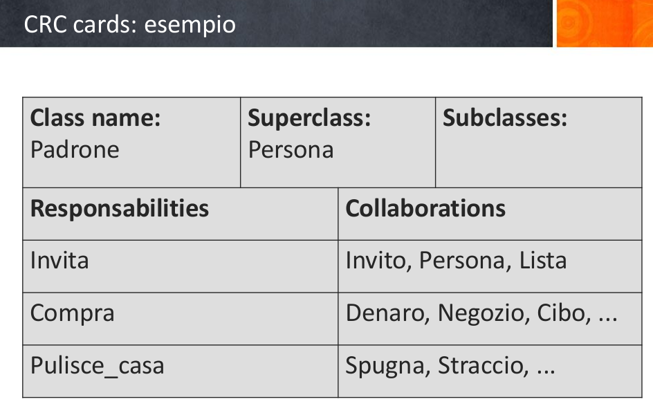
Selezione dei soggetti/classi.
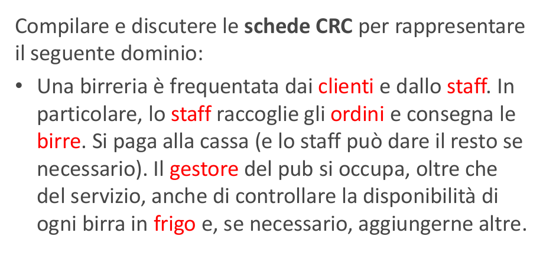